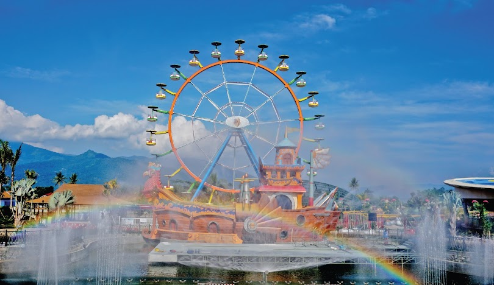
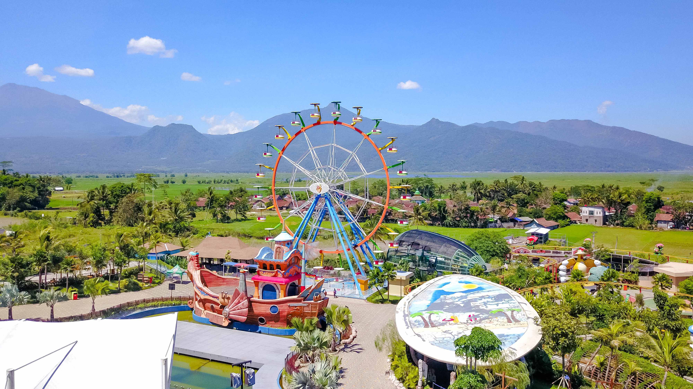

Sejarah Saloka Theme Park
Hadir sebagai salah satu destinasi wisata Pesona Indonesia yang berbentuk taman rekreasi tematik keluarga di Jawa Tengah yang mengusung konsep kearifan lokal. Berlokasi di persimpangan antara kota Semarang, Salatiga, Surakarta dan Daerah Istimewa Yogyakarta.
Nama Saloka terinspirasi dari tokoh legenda rakyat Rawa Pening, yaitu Ki Hajar Salokantara yang memiliki anak bernama Baru Klinthing. Saloka Theme Park juga memiliki sebuah maskot bernama 'Loka' yang berwujud naga berwarna hijau. Nama Loka diambil dari nama tokoh dalam cerita rakyat Rawa Pening.
Saloka Park dibangun dengan peralatan modern oleh tenaga ahli berpengalaman dan berlisensi internasional. Saloka Park dikelola oleh PT. Panorama Indah Permai terdaftar sebagai anggota IAAPA (International Association of Amusement Parks and Attractions). Pada 22 Juni 2019, Saloka Park dibuka secara resmi oleh Menteri Pariwisata, Arief Yahya, dan Gubernur Jawa Tengah Ganjar Pranowo. Menteri Pariwisata, Arief Yahya menyatakan bahwa tempat ini masuk dalam daftar destinasi wisata Pesona Indonesia, di kawasan Jogja, Solo, dan Semarang (Joglosemar).
Daya Tarik Utama
Beberapa daya tarik utama di Saloka Theme Park termasuk wahana ekstrim seperti Cakrawala, Lika-Liku, dan Bengak-Bengok. Selain itu, terdapat juga wahana keluarga seperti Jamur Apung, Taman Galileo, dan Kumbang Layang. Saloka juga menawarkan berbagai pertunjukan dan parade yang menarik.
Aktivitas Wisata
Di Saloka Theme Park, Anda dapat menikmati berbagai aktivitas seperti menaiki wahana seru, menyaksikan pertunjukan, dan menikmati berbagai kuliner di area makan yang tersedia. Saloka juga menyediakan area bermain untuk anak-anak dan berbagai toko suvenir.

{kind=link}
{kind=link}
{kind=link}